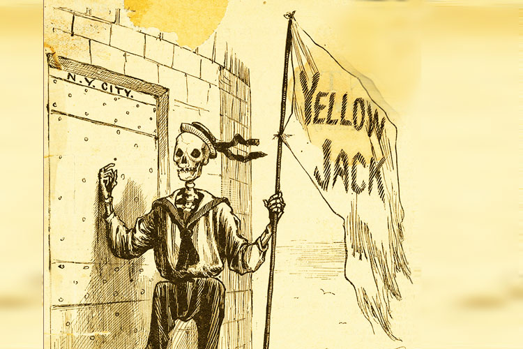
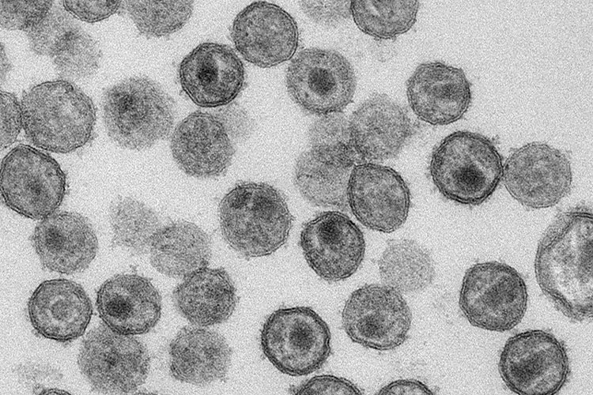
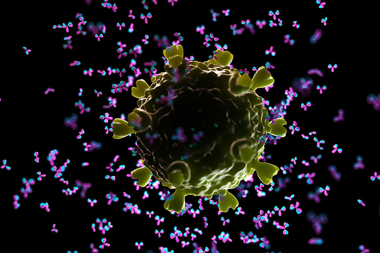

The procedure of ‘variolation’, by which pus is taken from a smallpox blister and introduced into a scratch in the skin of an uninfected person to confer protection, was in practice in Asia centuries before the first reports of inoculation in Europe. Read More
By Alexandra Flemming
Credit: Chronicle / Alamy Stock Photo
Milestone 21798
Putting smallpox out to pasture
Edward Jenner formally tested the hypothesis that prior cowpox infection could prevent smallpox by inoculating James Phipps with material from a cowpox lesion, giving rise to modern-day vaccination and the eventual eradication of smallpox in 1980. Read More
By Saheli Sadanand
Credit: Artmedia / Alamy Stock Photo
AnimationVaccines 101: How vaccines work
Vaccines function by safely triggering the kind of immune response that would occur following infection with a pathogen such as a virus or bacterium. This animation takes us through the cellular events that occur from the introduction of the vaccine into the body to the development of immunological memory and the protection that vaccines can offer to the wider population via herd immunity.
Milestone 31881
The first live attenuated vaccines
The discovery by Louis Pasteur that cultures of Pasteurella multocida bacteria gradually lost their virulence over time, which he named ‘attenuation’, led to the first experiments involving immunization with live attenuated Bacillus anthracis. Read More
By Caroline Barranco
Credit: World History Archive / Alamy Stock Photo
Milestone 41890
Serum power
The transfer of blood sera from individuals who had recovered from an infectious disease to individuals with ongoing infection with the same pathogen was first described for tetanus and diphtheria; this approach is still used today as a first-line therapy against arising viral infections for which few or no treatments exist. Read More
By Alison Farrell
Credit: SSPL / Getty Images
1897Standardized unit for diphtheria antitoxin
Serum varies greatly in its content of antitoxin — and hence potency — between samples. Working at the Institute for Infectious Diseases in Berlin, Paul Ehrlich developed a standardized unit of diphtheria antitoxin allowing for more consistent treatment by physicians.
Tuberculosis has been an infectious scourge throughout human history. Working in France, Albert Calmette and Camille Guérin developed their eponymous live attenuated vaccine for tuberculosis (BCG) and used it for the first time to protect at-risk infants. Read More
By Zoltan Fehervari
Credit: Alexey Kotelnikov / Alamy Stock Photo
Milestone 61926
Alum adjuvant discovery and potency
The British immunologist Alexander Thomas Glenny recognized the immunostimulatory properties of aluminium salts and used alum to boost the effectiveness of the diphtheria toxoid vaccine. Read More
By Amos Matsiko
Credit: S. Fenwick / Springer Nature Limited
Milestone 71937
Developing the 17D yellow fever vaccine
Yellow fever spread around the world with the slave trade, but has been preventable for more than 80 years thanks to the work of Nobel Prize winner Max Theiler on the 17D vaccine strain, the first and only recipient of the award for work on a vaccine. Read More
By Suzanne Elvidge
Credit: Bettmann / Getty Images
1938Tetanus vaccine
In 1924, tetanus toxoid — a formaldehyde-inactivated version of Clostridium tetani toxin — was produced. By 1938 tetanus toxoid was adsorbed to aluminium adjuvant to make an effective vaccine that was widely used during World War II.
Two vaccines were designed to combat whooping cough, one in 1939, the other in 1974. Both are imperfect, and although mostly under control, whooping cough is coming back. Read More
By Nico Fanget
Credit: Science Photo Library / Alamy Stock Photo
1945First influenza vaccine
A bivalent (influenza A and influenza B) whole inactivated vaccine was first approved for use in the military in 1945 and then for the general population in 1946.
Credit: Stocktrek Images, Inc. / Alamy Stock Photo
1949First combination vaccine
The first combination vaccine was composed of diphtheria vaccine and tetanus toxoids and was licensed for paediatric use in 1947. In 1949, a pertussis vaccine was added into the mix leading to DTP — formulations of which are used to this day.
The ability to culture poliovirus in human cells in a lab made possible the development of attenuated strains of the virus, and paved the way for the first successful polio vaccine. Read More
By Katharine Barnes
Credit: Pictorial Press Ltd / Alamy Stock Photo
AnimationVaccines 101: How new vaccines are developed
Vaccines are probably the most successful biomedical intervention in history, but why can they be so effective? The initial selection of the target antigens through to the way it is delivered can all impact how well a vaccine works. What goes into a vaccine and how do we test whether it’s doing its job properly? This animation answers these questions and more.
1951Nobel Prize
Max Theiler for “discoveries concerning yellow fever and how to combat it”.
John Franklin Enders, Thomas Huckle Weller and Frederick Chapman Robbins “for their discovery of the ability of poliomyelitis viruses to grow in cultures of various types of tissue”.
Two polio vaccines for defeating a paralysing scourge
Poliomyelitis has been eradicated from all but a handful of countries, all thanks to two types of vaccine developed in the 1950s — one delivering an inactivated virus through injection and an oral vaccine containing live attenuated virus. Read More
By Sarah DeWeerdt
Credit: Science History Images / Alamy Stock Photo
1963Measles vaccine licensed
The first measles vaccines were licensed in the USA — based on an inactivated virus (Pfizer) and a live attenuated virus (Merck).
1966The Global Smallpox Eradication Programme launched by the WHO
Following some initial setbacks, the WHO launched an intensified effort to rid the world of smallpox, underpinned largely by a mass vaccination campaign.
Maurice Hilleman at Merck combined live attenuated measles, mumps and rubella vaccines into a single shot with no diminution in potency or increase in adverse side-effects. Rapid and widespread uptake of the vaccine led to steep drops or near elimination of these diseases in the USA.
The WHO launched the Expanded Programme on Immunization (EPI) to increase the global uptake of childhood vaccination. The initial six diseases targeted by the EPI were diphtheria, whooping cough, tetanus, measles, poliomyelitis and tuberculosis. The EPI subsequently expanded to cover vaccinations for other diseases including hepatitis B and rubella. The EPI resulted in greatly increased vaccine coverage in the developing world.
The first vaccine against hepatitis B virus (HBV) was also the first of its kind, using recombinant DNA technology to generate virus-like particles that elicit an immune response comparable to that of the disease-causing pathogen itself. Read More
By Mirella Bucci
Credit: CDC
1980Smallpox declared eradicated
In 1977, following 10 years of a vaccination and containment programme, the last case of naturally acquired smallpox was seen in Somalia. In 1980, the World Health Assembly declared the world free of naturally occurring smallpox.
Credit: Agencja Fotograficzna Caro / Alamy Stock Photo
Milestone 121980
The sweet success of conjugate vaccines
The vaccine against Haemophilus influenzae type b (Hib), a major cause of bacterial meningitis and pneumonia in children, was the first of a new class of protein–polysaccharide vaccines that increase the immunogenicity of bacterial polysaccharides by conjugation to a protein carrier. Read More
By Jessica McHugh
Credit: Photology1971 / Alamy Stock Photo
Milestone 131984
Another layer of protection
Studies by Peter Aaby and colleagues in the 1980s championed the idea of nonspecific effects of vaccines, expanding on observations throughout vaccine history that some live vaccines protect against infections other than those caused by the target pathogen. Read More
By Kirsty Minton
Credit: Royal Geographical Society / Alamy Stock Photo
1990First experimental evidence for a protective HIV-1 vaccine
Chimpanzees were protected from HIV-1 infection using a recombinant vaccine based on the HIV-1 gp120 antigen plus alum adjuvant. While not directly leading to a human vaccine, these findings offered hope that vaccination might be an effective form of prophylaxis in humans.
Credit: Science History Images / Alamy Stock Photo
Milestone 141991
A vaccine to prevent HPV-related cancers
A crucial technological advance enabled the creation of human papillomavirus (HPV) virus-like particles in the lab, which were eventually used to generate the HPV vaccines that can prevent development of HPV-related cancers. Read More
By Sarah Seton-Rogers
Credit: Carl Conway / Springer Nature Limited
1996Albert Lasker Clinical Medical Research Award
Porter Warren Anderson Jr, David H. Smith, John B. Robbins and Rachel Scheerson for “Vaccine for preventing meningitis in children”.
2000Global Alliance for Vaccines and Immunization launched
The Global Alliance for Vaccines and Immunization (Gavi) — a public–private global health partnership — was launched to increase access to routine immunization in lower-income countries.
Two landmark papers together annotated the genome of a strain of Neisseria meningitidis and used bioinformatics and biochemical tools to identify a number of novel antigens — the first case of ‘reverse vaccinology’. Read More
By Joseph Willson
Credit: Sorbetto / Getty Images
Milestone 162004
The quest for a vaccine against malaria
Development of the RTS,S vaccine against Plasmodium falciparum circumsporozoite protein provides the best hope so far of reaching the long-held goal of an efficient and safe vaccine against malaria. Read More
By Francois Mayer
Credit: Simon Bradbrook / Springer Nature Limited
Milestone 172006
A dendritic cell cancer vaccine
A clinical trial studying vaccination of patients with prostate cancer with sipuleucel-T, a dendritic cell-based cancer vaccine personalized for each patient, led to the first approval for a cell-based cancer vaccine, although weak performance led to limited adoption. Read More
By Barbara Marte
Credit: Science Photo Library / Alamy Stock Photo
Milestone 182008
Assessing vaccine responses: you’ve got to have a system
Systems biology approaches have enabled researchers to examine vaccine responses in great detail using large datasets and mathematical modelling, revealing how the immune system responds to vaccination and providing models to predict these responses. Read More
By Joanna Clarke
Credit: Andriy Onufriyenko / Getty Images
2009Vaccination against HIV-1 may reduce risk of infection in humans
RV144 was the first phase III clinical trial of an HIV-1 vaccine to show small signs of protective efficacy. Although the results were modest, they reinvigorated efforts to develop HIV-1 vaccines after a series of disappointing setbacks.
Credit: Sebastian Kaulitzki / Alamy Stock Photo
2010Narcolepsy link to a pandemic influenza vaccine
Sweden and Finland reported an increased incidence of the sleep disorder narcolepsy in children and adolescents (5–19 years) who had received the 2009 pandemic influenza vaccine (influenza A(H1N1)pdm09). Although it was increased, the frequency of narcolepsy was still very low (~3/100,000) and it was not seen in adults or in other regions, suggesting there may be a genetic interaction with other unknown environmental factors.
The issue of public confidence in vaccines is a major threat to public health, as exemplified by media coverage of a now-retracted paper by Andrew Wakefield and colleagues; in the midst of a global pandemic, addressing these concerns is more urgent than ever. Read More
By Yvonne Bordon
Credit: GL Archive / Alamy Stock Photo
2011Rinderpest declared eradicated
Rinderpest was a serious viral disease affecting cattle. A concerted global effort led to the control of the virus and its eventual eradication in the wild — making it only the second disease to be eradicated primarily through vaccination.
Scientists downloaded the sequence of pandemic influenza virus from the internet and chemically synthesized a vaccine in record time. Read More
By Elie Dolgin
Credit: Kiyoshi Takahase Segundo / Alamy Stock Photo
2017Coalition for Epidemic Preparedness Innovations launched
Coalition for Epidemic Preparedness Innovations (CEPI) — a public–private global partnership — was launched to accelerate the development of vaccines and implementation of vaccine programmes.
Dengvaxia® was the first dengue virus vaccine to be licensed and gives good protection. However, a large vaccination programme in the Philippines found that complications can develop in vaccinated children who have not been previously infected with the natural dengue virus. This seems to be related to the phenomenon of antibody-dependent enhancement. Pre-screening for dengue infection is recommended to avoid complications with the vaccine.
Cancer vaccines directed at mutated proteins in each patient’s tumours, manufactured via a complex and technologically demanding process, have been shown to trigger highly specific anti-tumour immune responses in patients with melanoma. Read More
By João H. Duarte
Credit: Springer Nature Limited
2019Ebola vaccine licensed
The FDA approved the recombinant Ebola vaccine rVSV-ZEBOV. The vaccine was shown to provide a high level of protection during an extensive ring vaccination programme in the Democratic Republic of Congo.